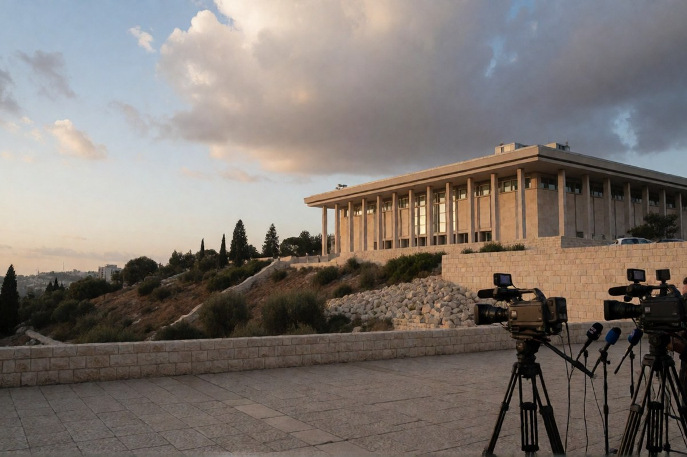

Geopolitica · 6 novembre 2026
In Israele 67 deputati indicano Eisenkot, 46 Netanyahu: Herzog decide domenica

Dopo le consultazioni l'ex capo di stato maggiore supera il premier uscente. Ma i 67 non sono ancora una coalizione: su Hamas Liberman e i partiti arabi non dicono la stessa cosa.
di Franco Zanghì
Sessantasette deputati su 120 hanno indicato Gadi Eisenkot come prossimo primo ministro di Israele. Benjamin Netanyahu si ferma a 46. Domenica 8 novembre il presidente Isaac Herzog dirà a chi affidare l'incarico. Ma i numeri delle consultazioni, da soli, non fanno un governo.
Come si è arrivati qui
Il 27 ottobre Israele ha votato per rinnovare la Knesset. Mercoledì e giovedì Herzog ha ricevuto tutti i partiti, uno per uno, e ciascuno gli ha indicato il proprio candidato. Con Netanyahu si sono schierati il suo Likud, che resta il primo partito con 27 seggi, la destra religiosa e lo Shas: in tutto 46. Con Eisenkot, ex capo di stato maggiore dell'esercito e oggi leader del partito Yashar, si sono schierati Naftali Bennett, la sinistra di Yair Golan, Avigdor Liberman e i due partiti arabi: in tutto 67. Il partito degli ultraortodossi askenaziti, 7 seggi, non ha indicato nessuno: per Netanyahu è un alleato che manca.
Herzog, giovedì sera, ha detto che i risultati delle consultazioni appaiono chiari in superficie, ma che la legge gli impone di verificare chi è davvero in grado di formare un governo. Deciderà domenica, dopo altri incontri.
Perché i 67 non sono una maggioranza
Il punto è che i 67 di Eisenkot, per ora, sono una somma e non una coalizione. Il partito di Liberman chiede che chi entra al governo dichiari Hamas un'organizzazione terroristica, e Eisenkot ha posto la stessa condizione. Il leader del partito arabo Ra'am, Mansour Abbas, secondo il Times of Israel quella frase non l'ha pronunciata. Il presidente della Lista Araba Unita, Yousef Jabareen, ha spiegato il proprio sostegno dicendo che non si tratta di scegliere fra il buono e il meglio, ma fra ciò che per loro è male e ciò che è ancora peggio.
Dall'altra parte il Likud attacca: Yoav Kisch ha parlato di un governo che esisterebbe solo grazie a chi sostiene il terrorismo. Herzog, durante le consultazioni, ha replicato agli uomini di Netanyahu che non si può tendere la mano all'altro schieramento chiamandolo «il blocco del disastro».
Per il Jerusalem Post lo stallo potrebbe portare a nuove elezioni, con un governo di unità nazionale o un governo di minoranza come strade alternative. Ariela Karmel, sul Times of Israel, la riassume in una formula: un governo senza maggioranza, e una maggioranza senza governo.
Perché riguarda anche noi
Dal prossimo governo israeliano dipendono le scelte su Gaza, sul fronte con l'Iran e sul confine con il Libano, dove ci sono ancora i soldati italiani della missione dell'Onu. È la stabilità del Mediterraneo che abbiamo davanti a casa.
Che Netanyahu perda i numeri non è una novità: era già successo nel 2021. La novità è che chi vuole sostituirlo deve tenere insieme Liberman e i partiti arabi, che sul punto più delicato non dicono la stessa cosa. Due date lo diranno: domenica 8, quando Herzog assegnerà l'incarico — chi lo riceve avrà al massimo 42 giorni per formare un governo — e martedì 10, quando giura la nuova Knesset e l'opposizione proverà a sostituire subito il presidente dell'aula, Amir Ohana. Se ci riesce, i 67 avranno dimostrato di saper votare insieme almeno una volta.
Fonti
- Ansa, «Israele verso un governo di minoranza: ad Eisenkot 67 voti, a Netanyahu 46», 6 novembre 2026
- Il Fatto Quotidiano, «Israele, Eisenkot supera Netanyahu: 67 deputati lo indicano premier», 5 novembre 2026
- Avvenire, «Il governo in Israele? Il presidente Herzog darà l'incarico domenica»
- Times of Israel (Stav Levaton, 5 novembre 2026; Ariela Karmel, 4 novembre 2026)
- Jerusalem Post (Keshet Neev, Shir Perets, 4 novembre 2026); Ynet (Amir Ettinger, 5 novembre 2026)
Quadro aggiornato alla sera del 6 novembre 2026: l'incarico non è ancora stato assegnato e le posizioni dei partiti possono cambiare fino alla decisione del presidente Herzog, attesa per domenica 8 novembre.